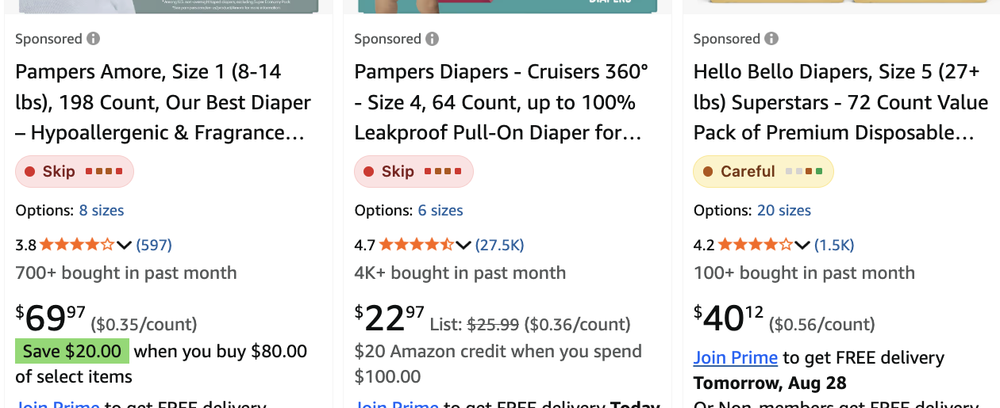
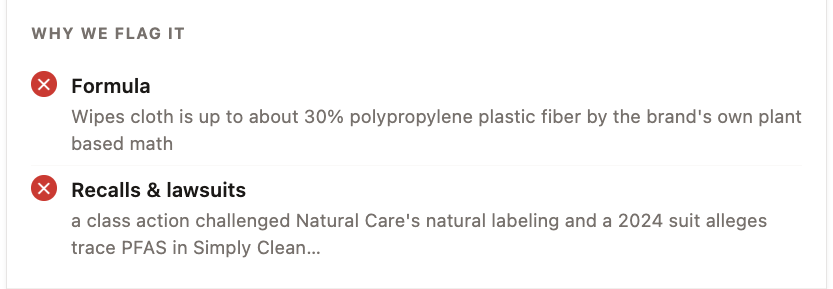
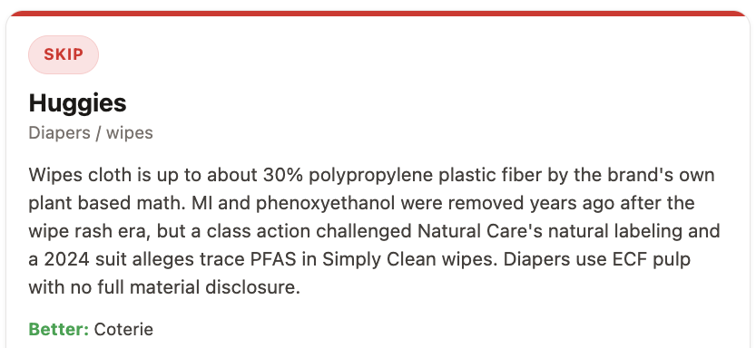
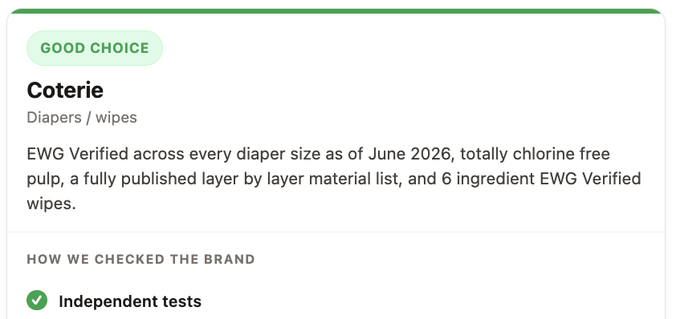

Run automatically while you shop, before anything reaches your basket.
Skip, careful or good choice on every search result.

The exact finding, who published it, and the year.

Every skip carries a researched alternative, linked to the full guide.

Verdicts written by a person, with the evidence attached.
